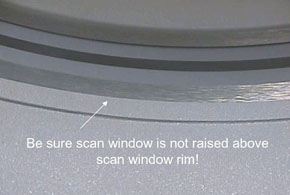

Operating Documentation
Direction 5193574-800, Rev# 22
LightSpeed 7.X Service Methods
Module Version 1.0, Version Date 7/17/15
Operating Documentation |
Complete Schedule A one third of every year. This schedule includes a general cleaning and inspection of the Gantry, Console, Table and PDU. In addition, you will inspect any Options installed at the customer site. The tools, test equipment, and consumables listed here are needed to complete Schedule A.
Every site must maintain a site log. It can be a GE Site Log, or a notebook or binder that you create. A System Service History also is available through iCenter or ISD tools.
When reviewing the error logs, or during the course of the PM, if you find anything that you determine is critical to quality or to the operation of the system, then you should record it on the PM Report Form, and schedule additional time for specific corrective action.
You will need to open the PM Report form that corresponds to this PM Schedule. (The form is located on the CD/DVD under Planned Maintenance and Tasks>PM Data Reports folder.) Fill in the Report form as you complete the PM Schedule. Print one copy for your Site Log. You may need to print a second copy for the customer, if requested.
| Required Persons | Time Required |
| 1 | 4.4 hours |
| Item | Qty | Part # |
| Standard FE Tool Kit | 1 | For a list of items, see Standard FE Service Tool Kit Listing. |
| Metric Allen Wrench Set | 1 | |
| Safety Glasses | 1 | |
| Vacuum Cleaner w/HEPA filter Kit | 1 | 46-297933P1 |
| CLEAN Vacuum brush (used only for slip rings) | ||
| Replacement HEPA filter, if required | 1 | 46-297948P1 |
| LOTO Kit | 1 | |
| Gloves, PPE | 1 pair | |
| Grease Gun (for Gantry Main Bearing) | 1 | 46-297931P1 |
| Grease Gun (for Table Rails) | 1 | U0018BF |
| Torque Wrench Kit | 1 | |
| Temperature/Humidity Tool | 1 | Oregon Scientific BAR608HGA or equivalent |
| 20 cm QA Phantom | 1 | |
| 6 ft. Step Ladder | 1 | |
| Installation Manuals for Options installed on site | As Required | |
| Tape Measure - Metric | 1 |
| Item | Qty | Part # |
| Tywraps | As Required | |
| Neoprene or nitrate gloves | 1 pair | LG 46-194427P347 (Qty 100) XL 46-194427P348 (Qty 100) |
| Kimwipes (or waste cloths) | As Required | |
| Shell Alvania Grease #2 (for Table Leg and Rail) | 1 | 60cc Tube : 2188551 |
| White sheets of paper | As Required | |
| Water | As Required | |
| Vinegar (mixed with water) OR Isopropyl Alcohol | As Required | |
| Soft cotton cloth | 1 | |
| Polyrex Grease (for Gantry Main Bearing) | 1 | 1 oz. Cartridge 2347076 |
You may do any of the following remotely, if possible.
If this is not the very first PM on this system, before beginning this PM Schedule, verify that the last PM Schedule completed was Schedule C.
Determine if any PM tasks were completed earlier as part of a service action.
Inspect the console error logs:
Check GEsys*.log for Application Stops and Starting.
egrep "System Software|20000234|200520024|200002380|Software Initialization" gesys_*.log|more;
Check /var/log/messages for Linux reboots and shutdowns, and how long since the last reboot.
cd /var/log;egrep "restart|shutdown" messages; w;
Record the number of gantry revolutions on the PM Report Form. To find the number of revolutions:
Open a Unix shell.
Type: RTSViewer -D
Perform the following tasks in the General Gantry Inspection.)
Test Display Lights and E-stop Buttons
Test Patient Tilt Sensors
Move the table to lowest position.
Move the gantry to zero degrees.
Power down the system (For procedures, see Section 2.1 of Safety-Equipment Service-Lockout-Tagout-PPE) and apply LOTO (for procedures, see Safety-Equipment Service-Lockout-Tagout-PPE).
| NOTE: | If your system has an Emergency OFF switch on the wall, use it rather than the A1 Off switch to verify that the Emergency Off switch is working properly. |
If installed, confirm that the UPS power is disconnected when the Emergency Off device is pushed.
Remove side, top, front, and rear gantry covers. (For procedures see, Replacement → Gantry → Enclosure → Cover Procedures.)
Complete the General Console Cleaning and Inspection. (For procedures, see General Console Cleaning and Inspection.)
Inspect the Brush Block, Brushes, and Remove Slip Ring Brush Debris. (For procedures, see Inspect Brush Block and Brushes and Remove Slip Ring Debris.)
Complete a Gantry Filter Cleaning and Rotational Checks, including the following: (For procedures, see Gantry Filter Cleaning and Rotational Checks.)
Clean DAS Detector Plenum Filter
Clean Gantry Heater Filter
Clean the top cover fans
Clean Detector Face Plate
Complete Rotating Path Components and Cables Inspection
Complete the Vacuum Covers & Inside PDU.
Complete the Encoder Inspection. (For procedures, see Gantry Encoder Inspection.)
Remove LOTO (for procedures, see Safety - Equipment Service-Lockout-Tagout-PPE) and power up the system (for procedures, see Section 2.2 of Safety - Equipment Service-Lockout-Tagout-PPE).
Start up the UPS, if present. (For procedures, see Three Phase Partial UPS Installation Manual, Direction 5272751-1EN.)
Turn the 120VAC power ON at the gantry service switch panel. (For procedures, see Safety-Equipment Service-Gantry)
Check that all five (5) of the Plenum Fans are operating properly. Use a piece of paper to make sure the fans are pulling air INTO the plenum.
| NOTE: | A fan that is not running can still have the fan blades moving as air is pushed back out of the plenum though that fan port. |
Check/Grease the gantry main bearing.
Check the number of gantry revolutions since the gantry bearing was last greased.
If the number of revolutions is 2,000,000 or more, grease the gantry main bearing. (For procedures, see Grease Main Bearing)
If the number of revolutions is less than 2,000,000, indicate on the PM Report Form that grease is not required at this time.
Complete a Tube Heat Exchanger inspection. (For procedures, see Clean Tube Heat Exchanger and Heat Exchanger Pump Inspection.)
Turn the 120 VAC, HV and Axial power OFF at the gantry service switch panel. (For procedures, see Safety-Equipment Service-Gantry)
Reinstall front, rear, and top covers to the gantry. (For procedures see, Replacement → Gantry → Enclosure → Cover Procedures.)
Install and inspect the Scan Window. (For installation procedures, see Replacement-Gantry Enclosure-Gantry Scan Window Removal and Re-install.)
Inspect the scan window for physical damage.
Check that the scan window is not raised higher than the front or rear cover at any location on the circle, and that the window is not wrinkled (see Illustration 1).
Illustration 1: Scan Window

Replace the scan window if it is damaged. (If you need to replace the scan window, follow the procedures in Replacement-Gantry Enclosure-Gantry Scan Window Removal and Re-Install to remove the old window and install a new one.)
Turn the 120 VAC power ON at the gantry service switch panel. (For procedures, see Safety-Equipment Service-Gantry.)
Rotate the gantry by hand and inspect rotational clearances.
Move the table to ISO elevation and the cradle to the maximum OUT position.
Turn the power OFF (120 VAC, Axial Drive and HVDC) at the gantry service switch panel.
Complete the General Table Cleaning and Inspection. (For procedures, see General Table PM.)
Turn on the Axial Enable and HVDC switches at the gantry service switch panel. (For procedures, see Safety-Equipment Service-Gantry)
If the 120 VAC power is still off, turn it back ON at the gantry service switch panel.
Install the gantry side covers. (For procedures see, Replacement → Gantry → Enclosure → Cover Procedures.)
Complete the System Scanning Test. (For procedures, see System Scanning Test.) While completing the test, do the following verifications (Step 1 and Step 2 in Section 10.2) and record them on the PM Report Form:
Verify that the following X-ray On indicators light up:
SCIM
Gantry Front
Gantry Rear (To avoid walking into the room during a scan, you may want to use a mirror to check this X-ray indicator.)
Room Warning Light
Verify that the following scan control push-button are operational:
Start scan (and keypad lights).
Stop scan (and keypad lights).
Pause scan.
Advance to scan.
Stop table.
Update the site logs. (For procedures, see Update Site Logs.)
Complete all required PM paperwork.